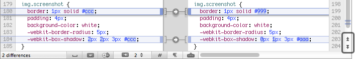
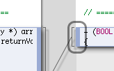

Cornerstone contains built-in compare tools for reviewing changes before pushing them to or from the repository.
For the sake of conciseness, this section makes extensive use of the terms BASE, WORKING and HEAD to describes the various versions which can be compared.
See the Terminology section for more information on these terms.
To view the changes made to a file since the last update or commit:
Press the Compare With BASE button in the view's toolbar to display the compare view (key equivalent ⌘⏎).
To compare the working version against the latest version in the repository (i.e. the HEAD version):
Once in a compare view, the left and right revision fields can be used to select both well-known revisions such as BASE, WORKING, HEAD and PREVIOUS and arbitrary revisions which can be specified by revision number or date.
When comparing two text files, the Compare menu functions (Previous Difference (⌘↑), Next Difference (⌘↓) etc.) can be used to navigate between differences.
Alternatively, the previous and next change buttons in the compare view's vertical scroller can be used to jump between differences:

Holding down the Option (⌥) key while clicking the previous and next buttons will jump to the first and last difference respectively.
To select text in the text compare view, click and drag using the mouse as usual with Mac OS X applications.
The following text selection shortcuts are also provided:

See Alternate Menu Functions for more information on alternate menu functions.
Cornerstone provides options controlling how files are compared and displayed by the compare view:
| Compare > Show Differences in Whitespace
When on, whitespace is compared in the same way as any other character. When off, runs of whitespace characters (space and tab characters) are collapsed to a single space character before being compared. This option has no effect on how newline characters are compared. |
|
| Compare > Show Differences in Line Endings
When on, newline characters are compared in the same way as any other character. When off, differences in the style of line ending characters, e.g. when line endings have been changed from Unix style (LF) to Windows-style (CR/LF), are ignored. | |
| Compare > Show Line Differences
When on, differences between the left and right versions of a modification are highlighted. Enabling line difference highlighting makes it much easier to visually detect minor changes between the left and right versions. Line difference highlighting is enabled by default. | |
| Compare > Show Line Numbers
When on, a gutter is displayed next to the text with numbers for each of the lines. Line numbers are displayed by default. | |
| Compare > Show Invisibles
When on, invisible characters such as spaces, tabs and newlines are shown. This can be useful when comparing whitespace-only changes to files. Displaying invisibles exacts a minor penalty on rendering performance in the compare view. As a result the option is off by default. | |
| Compare > Show Annotations
When on, an additional annotation gutter is displayed displaying information on the file's authors. This is also known as blame information. See the section on annotations in the compare view for more information. |
To compare BASE with WORKING:
To compare WORKING with HEAD:
See Using External Compare Tools for more information on setting up external tools for use with Cornerstone.